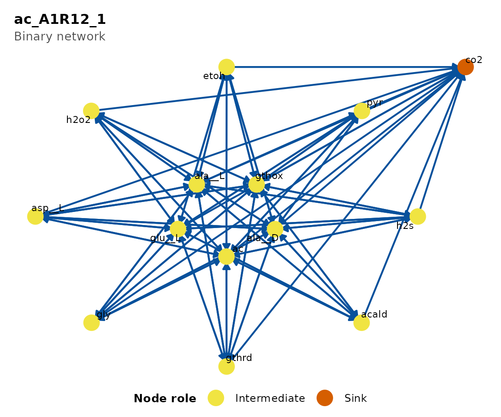
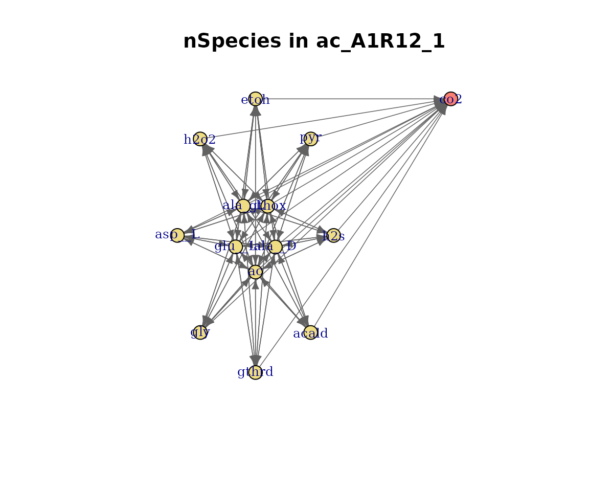
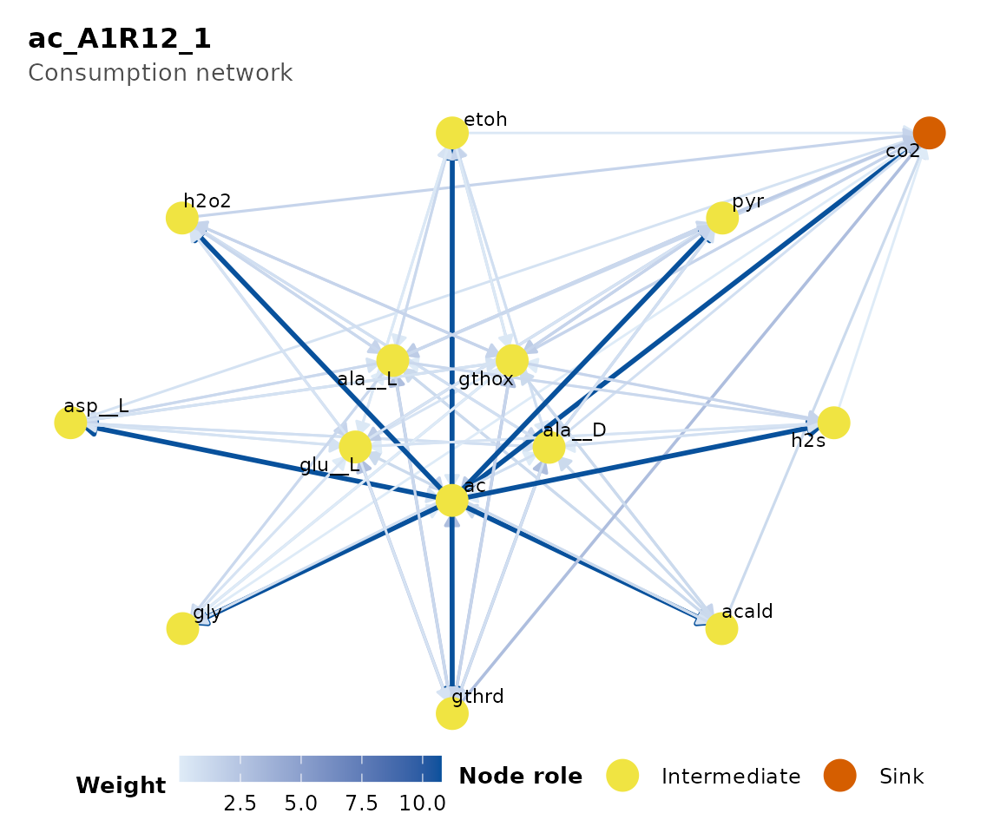
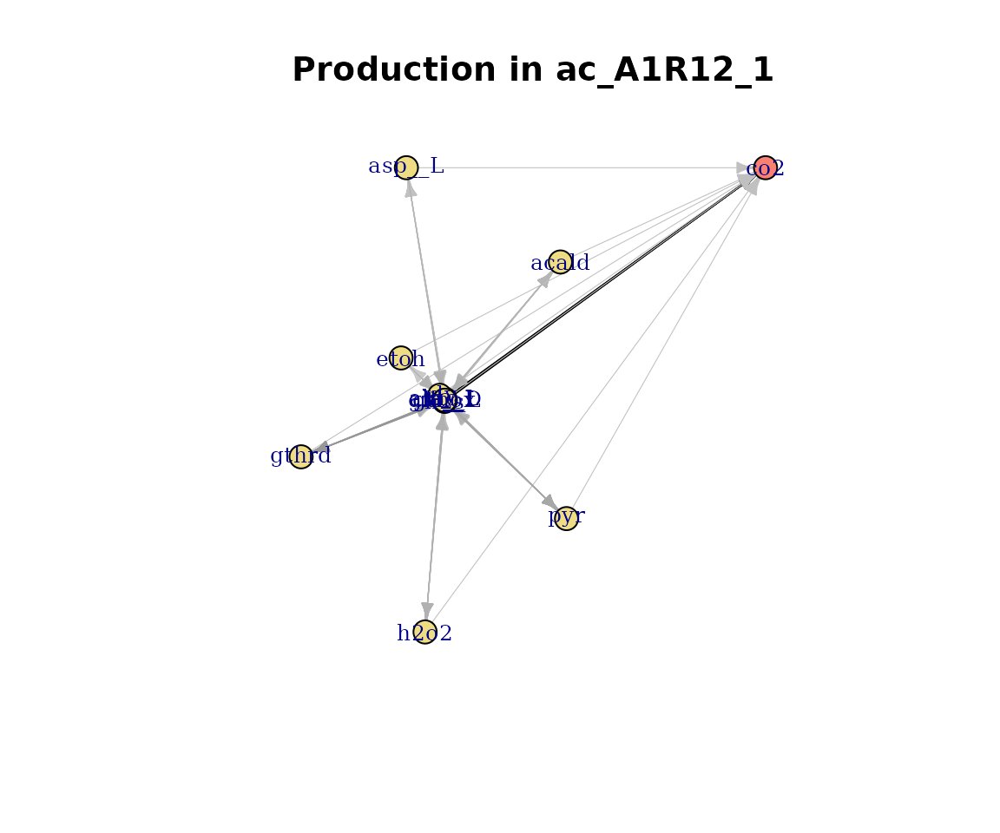
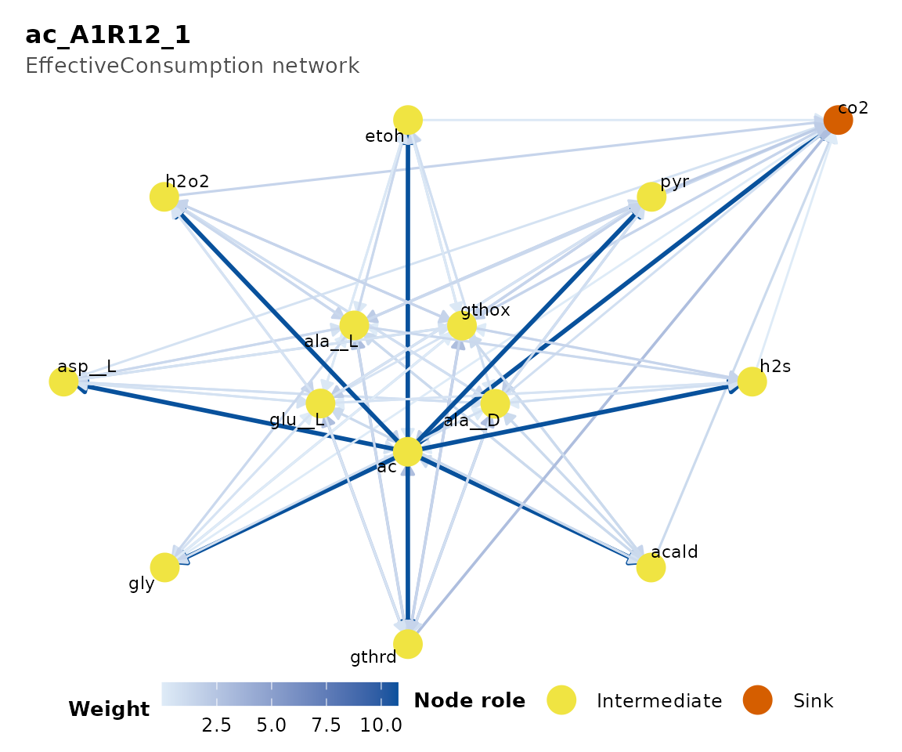
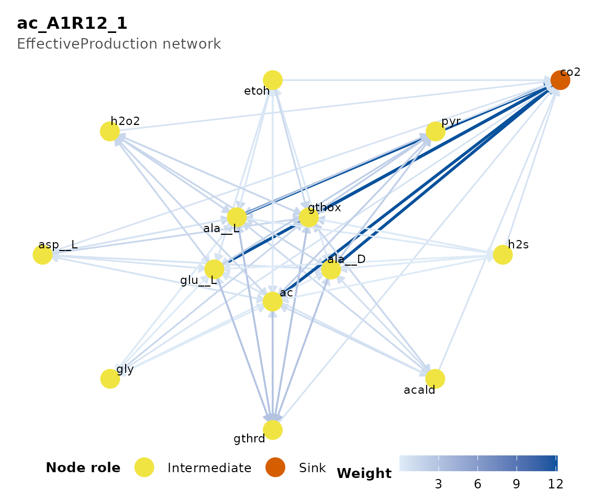
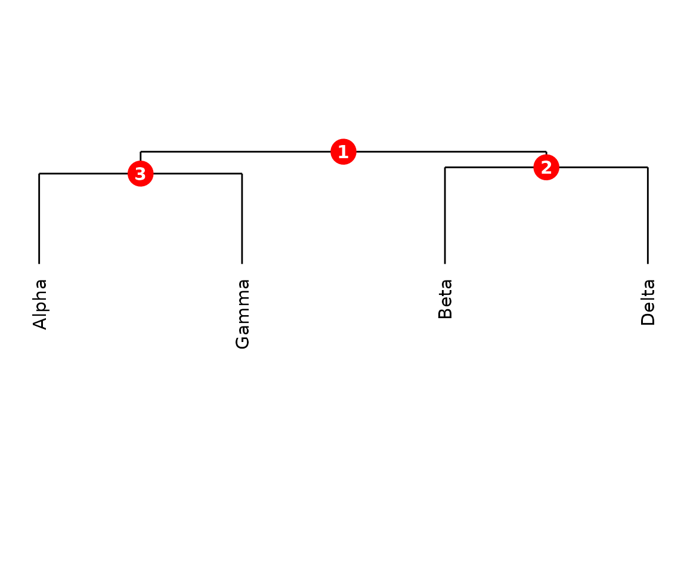
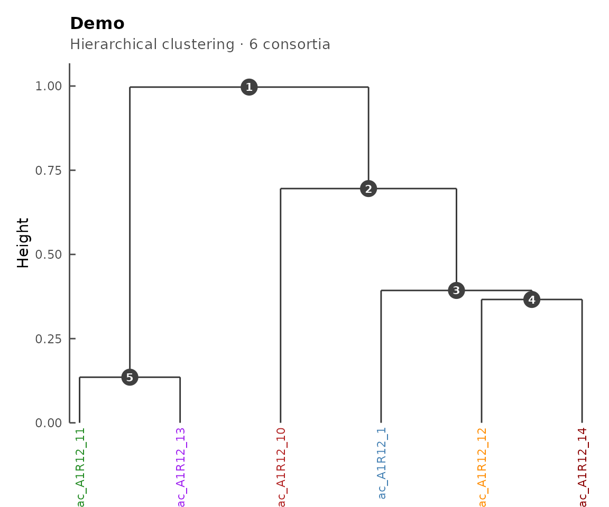
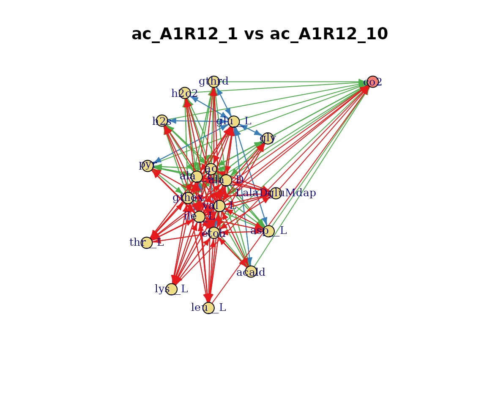
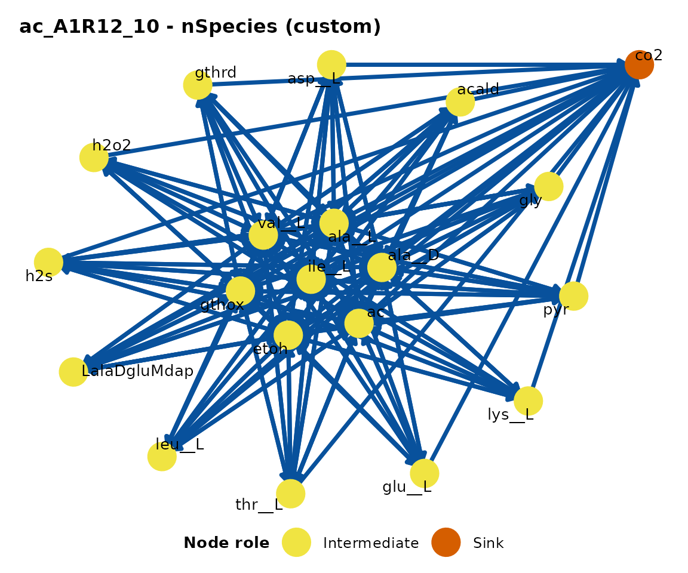

Introduction
ramen provides plot() methods for all three
core classes: ConsortiumMetabolism,
ConsortiumMetabolismSet, and
ConsortiumMetabolismAlignment. This vignette is a visual
gallery of every plot type. For context on the underlying analyses, see
vignette("ramen", package = "ramen") and
vignette("alignment", package = "ramen").
Example data
data("misosoup24")
cm_list <- lapply(seq_len(6), function(i) {
ConsortiumMetabolism(
misosoup24[[i]],
name = names(misosoup24)[i]
)
})
cms <- ConsortiumMetabolismSet(cm_list, name = "Demo")
cma_pair <- align(cm_list[[1]], cm_list[[2]])
cma_mult <- align(cms)ConsortiumMetabolism plots
plot(CM) renders a directed metabolic flow network using
igraph. Nodes are coloured by role:
lightblue for sources (only outgoing edges),
salmon for sinks (only incoming edges), and
lightgoldenrod for intermediate nodes (both incoming
and outgoing). The type argument selects which assay matrix
determines edge weights.
Binary network
The default view shows network structure with uniform edge weights.
plot(cm_list[[1]], type = "Binary")
Binary metabolic network.
Number of species per pathway
Edge weights reflect how many species catalyse each pathway.
plot(cm_list[[1]], type = "nSpecies")
nSpecies-weighted network.
Consumption and production
Edges weighted by summed flux magnitudes.
plot(cm_list[[1]], type = "Consumption")
Consumption-weighted network.
plot(cm_list[[1]], type = "Production")
Production-weighted network.
Effective consumption and production
Effective diversity measures how evenly species contribute to each pathway (Shannon-based effective number of species).
plot(cm_list[[1]], type = "EffectiveConsumption")
Effective consumption network.
plot(cm_list[[1]], type = "EffectiveProduction")
Effective production network.
ConsortiumMetabolismSet plots
Dendrogram
plot(CMS) draws a hierarchical clustering dendrogram
with numbered internal nodes. These node IDs are used by
extractCluster() to pull sub-clusters.
plot(cms)
CMS dendrogram with numbered nodes.
Custom label colours
Supply a data.frame mapping leaf labels to colours.
colour_map <- data.frame(
label = names(misosoup24)[seq_len(6)],
colour = c(
"steelblue", "firebrick", "forestgreen",
"darkorange", "purple", "darkred"
)
)
plot(cms, label_colours = colour_map)
CMS dendrogram with coloured labels.
ConsortiumMetabolismAlignment plots
The CMA plot() method supports three types:
"heatmap", "network", and
"scores". The default is "network" for
pairwise and "heatmap" for multiple alignments.
Heatmap (multiple alignment)
Pairwise FOS similarities with dendrogram-based ordering. Values range from 0 (no overlap) to 1 (identical).
plot(cma_mult, type = "heatmap")
Similarity heatmap.
Network (pairwise alignment)
Shared pathways in green, query-unique in blue, reference-unique in red.
plot(cma_pair, type = "network")
Pairwise alignment network.
Using plotDirectedFlow() directly
For fine-grained control over the network layout, call
plotDirectedFlow() directly on an igraph object. This is
the function underlying all CM and CMA network plots.
g <- igraph::graph_from_adjacency_matrix(
SummarizedExperiment::assay(cm_list[[2]], "nSpecies"),
mode = "directed",
weighted = TRUE
)
plotDirectedFlow(
g,
color_edges_by_weight = TRUE,
edge_width_range = c(0.5, 2),
vertex_size = 12,
vertex_label_cex = 0.7,
main = paste0(name(cm_list[[2]]), " - nSpecies (custom)")
)
Custom directed flow plot.
Plot type summary
| Object class |
type argument |
Description |
|---|---|---|
| CM |
"Binary" (default) |
Directed network, unweighted |
| CM | "nSpecies" |
Pathways weighted by species count |
| CM | "Consumption" |
Pathways weighted by consumption flux |
| CM | "Production" |
Pathways weighted by production flux |
| CM | "EffectiveConsumption" |
Effective consuming species |
| CM | "EffectiveProduction" |
Effective producing species |
| CMS | (none) | Dendrogram with numbered nodes |
| CMA | "heatmap" |
Pairwise similarity heatmap |
| CMA | "network" |
Shared/unique pathway graph |
| CMA | "scores" |
Bar chart of similarity metrics |
Session info
sessionInfo()
#> R version 4.5.3 (2026-03-11)
#> Platform: x86_64-pc-linux-gnu
#> Running under: Ubuntu 24.04.4 LTS
#>
#> Matrix products: default
#> BLAS: /usr/lib/x86_64-linux-gnu/openblas-pthread/libblas.so.3
#> LAPACK: /usr/lib/x86_64-linux-gnu/openblas-pthread/libopenblasp-r0.3.26.so; LAPACK version 3.12.0
#>
#> locale:
#> [1] LC_CTYPE=C.UTF-8 LC_NUMERIC=C LC_TIME=C.UTF-8
#> [4] LC_COLLATE=C.UTF-8 LC_MONETARY=C.UTF-8 LC_MESSAGES=C.UTF-8
#> [7] LC_PAPER=C.UTF-8 LC_NAME=C LC_ADDRESS=C
#> [10] LC_TELEPHONE=C LC_MEASUREMENT=C.UTF-8 LC_IDENTIFICATION=C
#>
#> time zone: UTC
#> tzcode source: system (glibc)
#>
#> attached base packages:
#> [1] stats graphics grDevices utils datasets methods base
#>
#> other attached packages:
#> [1] ramen_0.99.0 BiocStyle_2.38.0
#>
#> loaded via a namespace (and not attached):
#> [1] SummarizedExperiment_1.40.0 gtable_0.3.6
#> [3] ggplot2_4.0.2 xfun_0.57
#> [5] bslib_0.10.0 Biobase_2.70.0
#> [7] lattice_0.22-9 yulab.utils_0.2.4
#> [9] vctrs_0.7.2 tools_4.5.3
#> [11] generics_0.1.4 stats4_4.5.3
#> [13] parallel_4.5.3 tibble_3.3.1
#> [15] pkgconfig_2.0.3 Matrix_1.7-4
#> [17] RColorBrewer_1.1-3 S7_0.2.1
#> [19] desc_1.4.3 S4Vectors_0.48.1
#> [21] lifecycle_1.0.5 farver_2.1.2
#> [23] compiler_4.5.3 treeio_1.34.0
#> [25] textshaping_1.0.5 Biostrings_2.78.0
#> [27] Seqinfo_1.0.0 codetools_0.2-20
#> [29] htmltools_0.5.9 sass_0.4.10
#> [31] yaml_2.3.12 lazyeval_0.2.3
#> [33] pkgdown_2.2.0 pillar_1.11.1
#> [35] crayon_1.5.3 jquerylib_0.1.4
#> [37] tidyr_1.3.2 BiocParallel_1.44.0
#> [39] SingleCellExperiment_1.32.0 DelayedArray_0.36.1
#> [41] cachem_1.1.0 viridis_0.6.5
#> [43] abind_1.4-8 nlme_3.1-168
#> [45] tidyselect_1.2.1 digest_0.6.39
#> [47] dplyr_1.2.1 purrr_1.2.1
#> [49] bookdown_0.46 labeling_0.4.3
#> [51] TreeSummarizedExperiment_2.18.0 fastmap_1.2.0
#> [53] grid_4.5.3 cli_3.6.5
#> [55] SparseArray_1.10.10 magrittr_2.0.5
#> [57] S4Arrays_1.10.1 ape_5.8-1
#> [59] withr_3.0.2 scales_1.4.0
#> [61] rappdirs_0.3.4 rmarkdown_2.31
#> [63] XVector_0.50.0 matrixStats_1.5.0
#> [65] igraph_2.2.3 gridExtra_2.3
#> [67] ragg_1.5.2 evaluate_1.0.5
#> [69] knitr_1.51 GenomicRanges_1.62.1
#> [71] IRanges_2.44.0 viridisLite_0.4.3
#> [73] rlang_1.2.0 dendextend_1.19.1
#> [75] Rcpp_1.1.1 glue_1.8.0
#> [77] tidytree_0.4.7 BiocManager_1.30.27
#> [79] BiocGenerics_0.56.0 jsonlite_2.0.0
#> [81] R6_2.6.1 MatrixGenerics_1.22.0
#> [83] systemfonts_1.3.2 fs_2.0.1